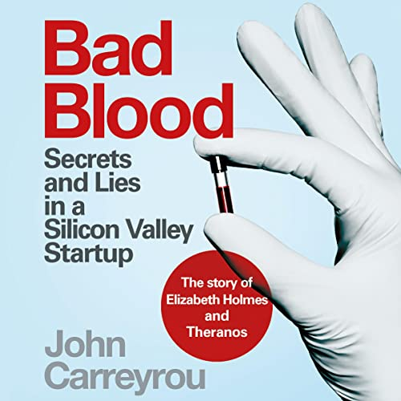

Why Did Frank (Charlie Javice) Fail?
Sold JPMorgan 4 Million Fake Students
📜 What Happened
Charlie Javice — Forbes 30 Under 30 — built Frank, a startup simplifying student financial aid, and sold it to JPMorgan for $175M on the claim of 4.25 million users. When the bank emailed a test batch, delivery rates were catastrophic: prosecutors showed Javice had paid a data scientist $18,000 to fabricate a synthetic list of ~4 million fake students after an employee refused. Real users: under 300,000. JPMorgan sued; in 2025 she was convicted of fraud and sentenced to over 7 years.
☠️ The Fatal Mistake
Buying and selling on a single unverified metric — the world's biggest bank ran less diligence on the user list than it would on a car loan.
🧠 The Lesson (Free for You)
Verify the metric the whole deal stands on — send the emails, call the customers, count the money. And if your company's value requires inventing 4 million people, the exit you're building is a cell.
📕 The Antidote Book

Carreyrou — the Wall Street Journal reporter whose investigation brought down Theranos — reconstructs the fraud from inside: Elizabeth Holmes' Edison device could run only a fraction of promised tests, unreliably, so…
📖 OPEN THE FULL INTERACTIVE BREAKDOWN →Searchable, filterable, free forever — they paid billions; your lesson is free.